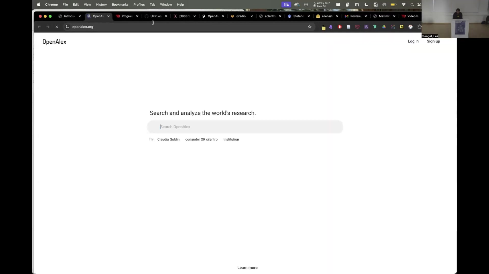

4 OpenAlex Mapper: Transdisciplinary Investigations
4.1 Overview
The work presented introduces OpenAlex Mapper, a tool for investigating transdisciplinary applications of scientific models and concepts. Its development was a collaboration between Max Neuchel, Andrea Loettgers, and Taya Knuuttila, funded by an ERC grant on “Possible Life.”
OpenAlex Mapper leverages a fine-tuned Specter 2 language model, the OpenAlex database, and UMAP dimensionality reduction. The Specter 2 model was fine-tuned to enhance its ability to recognize disciplinary boundaries using a dataset of articles from similar disciplinary backgrounds.
The core of the system involves a base map created by embedding 300,000 random English-language articles with abstracts from OpenAlex using the fine-tuned Specter 2 model. These embeddings are then reduced to two dimensions with UMAP, and the trained UMAP model is retained.
OpenAlex Mapper allows users to input arbitrary OpenAlex search queries. The tool downloads the results, embeds their abstracts using the same Specter 2 model, and projects these new embeddings onto the pre-existing 2D UMAP base map. This visualization helps users understand the disciplinary distribution and context of search terms, authors, or concepts.
The tool is interactive, allowing users to explore data points on the map and link back to the original source papers. Key features include options for visualizing temporal distributions and citation graphs.
The primary purpose of OpenAlex Mapper is to assist researchers in History and Philosophy of Science and Scholarship (HPSS) in addressing challenges related to small sample sizes and generalizing case study findings, particularly in the context of large-scale, contemporary science. It aims to support qualitative heuristic investigations by providing a quantitative, large-scale perspective.
Example applications include tracking the diffusion of model templates (e.g., Hopfield model), mapping the interdisciplinary presence of concepts (e.g., “phase transition” vs. “emergence”), and analyzing the distribution of scientific methods (e.g., random forest vs. logistic regression).
Limitations of the tool include its dependency on the OpenAlex database’s data quality and coverage, the current use of an English-only language model, the requirement for abstracts or good titles for embedding, and the inherent imperfections of the UMAP algorithm (stochasticity and information loss during dimensionality reduction). A working paper with further technical details is available.
4.2 Architecture and Core Methodology

OpenAlex Mapper is a tool developed by Max Neuchel, in collaboration with Andrea Loettgers and Taya Knuuttila at the philosophy department in Vienna, with funding from an ERC grant focused on “Possible Life.” Max Neuchel is currently a PhD student at the theoretical philosophy department at Utrecht University. The presentation slides, which include interactive elements, are accessible at maxnoichl.eu/talk.
The core methodology behind OpenAlex Mapper involves several key steps:
First, a Specter 2 language model was fine-tuned. This fine-tuning aimed to enhance the model’s ability to recognize and respect disciplinary boundaries. The training process utilized a dataset composed of articles from very similar disciplinary backgrounds, and the model was trained to effectively distinguish between them. This fine-tuning represented minor modifications to the Specter 2 model, rather than a comprehensive retraining, resulting in a “discipline improved Specter 2.” The training process itself was visualized using UMAP dimensionality reduction.
Second, the OpenAlex database, a vast and inclusive repository of scholarly material, was leveraged. OpenAlex is noted for being larger and more inclusive than Web of Science or Scopus, though likely smaller than Google Scholar. Its significant advantages include being fully open data, easily queryable in batches, and freely accessible.
Third, a base map was created. This involved sampling 300,000 random articles from OpenAlex, with the criteria that they be in English and possess reasonably well-formed abstracts. The abstracts of these 300,000 articles were then embedded using the fine-tuned Specter 2 model, which produces embeddings with 768 dimensions. Subsequently, Uniform Manifold Approximation and Projection (UMAP) was employed to reduce these high-dimensional embeddings to a two-dimensional representation. The UMAP model trained during this stage is retained for future use.
Finally, the OpenAlex Mapper tool enables users to interact with this system. Users can input arbitrary queries into the OpenAlex database through the tool. The tool then downloads the relevant search results. The abstracts of these newly retrieved articles are embedded using the same fine-tuned Specter 2 model. These new embeddings are then processed through the previously trained UMAP model, projecting them onto the 2D base map. This allows the new articles to be positioned on the map as if they had been part of the original layout process, a feature facilitated by UMAP’s capability to project new data into an existing learned manifold.
4.3 Demonstration and Interactive Features

Access to the OpenAlex Mapper tool is provided through the presenter’s website, maxnoichl.eu/talk, which also hosts the presentation slides, or via a direct URL to the tool itself. A live demonstration showcased its operation.
The workflow begins with navigating to the OpenAlex search interface to find articles related to a topic, for instance, “scale-free network models.” The URL generated by this OpenAlex search query is then copied. This URL is subsequently pasted into the OpenAlex Mapper interface. Users can adjust various settings before running the query. During the live demonstration, a minor technical issue involving a red screen overlay, possibly related to Zoom, briefly interrupted the display but was resolved by reloading.
Once a query is run, OpenAlex Mapper performs several backend processes. It downloads a specified number of records from the OpenAlex search results; for the demonstration, this was limited to the first 1000 records to save time. The tool then embeds the abstracts of these downloaded articles. If the user has enabled the option, it also processes the citation graph among these results. Finally, it generates a map visualizing the queried data.
The output is a projection of the search results onto a pre-existing gray base map. This visualization effectively shows where scholarly items that match the query—whether by term usage, citation of a specific author, or other criteria—appear within the broader scientific landscape. An example map for “scale-free network models” was generated live, and a previous example using the search term “coriander” (a standard OpenAlex example) was mentioned to illustrate the tool’s output.
A key aspect of OpenAlex Mapper is its interactivity. Users can explore the map in detail, investigating why certain papers or concepts appear in specific regions. For example, one could examine why a term like “coriander” might surface in publications related to epidemiology or public health. Furthermore, clicking on any individual paper represented on the map will link the user directly to its corresponding website or original source document.
The tool offers several configurable settings. Users can opt to visualize the temporal distributions of their search results or to display the citation graph overlaid on the map. Additionally, an alternative version of OpenAlex Mapper was mentioned as being available for a few hours after the presentation. This version runs on a more powerful, higher-latency GPU setup, designed to handle larger and more computationally intensive queries.
4.4 Rationale and Utility for HPSS

OpenAlex Mapper is particularly relevant for the field of History and Philosophy of Science and Scholarship (HPSS). A common challenge within HPSS is the reliance on small samples and in-depth case studies. While these methods provide rich, detailed insights—often derived from close readings of scientific papers, interactions with scientists, or analyses by individuals trained as both scientists and philosophers—generalizing these findings to the vast scale of contemporary science presents a significant hurdle. There is a concern about how to validate such qualitative approaches in the context of what is described as “global big rapid discovery contemporary science.”
The OpenAlex Mapper tool is designed to help address these issues by offering a broader, large-scale perspective. It assists researchers in answering questions about the actual prevalence, context, and impact of scientific models, concepts, or methods. For instance, concerning a model like the Hopfield model, which originated in a particular scientific domain and was subsequently adopted in various other fields, OpenAlex Mapper can help investigate where this model truly established a foothold, where it became a significant tool, where it is still actively used, and where it continues to be referenced. The tool facilitates tracking such transportation and adoption of models across diverse scientific disciplines.
The methodological approach of OpenAlex Mapper involves sophisticated quantitative methods operating in the background. However, its primary aim is to support what are, in essence, qualitative heuristic investigations. The tool is designed with HPSS users in mind, enabling a fluid transition between a macroscopic view provided by the “big map” and a microscopic examination of specific results. Users can zoom in on particular clusters or individual papers to understand the nuances of what is occurring at a granular level. Crucially, all explorations conducted with the tool can be directly linked back to the original textual sources, as each data point on the map provides access to the corresponding paper.
4.5 Illustrative Applications
Several examples, all representing ongoing work and work in progress, illustrate the application of OpenAlex Mapper:
The first use case involves the investigation of model templates, which was an original motivation for developing the tool. In the philosophy of science, “model templates” refer to a way of conceptualizing how models possessing very similar underlying structures can arise independently in different scientific disciplines. This concept also explores how such shared structures might organize scientific knowledge in a manner that cuts across, or is orthogonal to, traditional disciplinary boundaries. Using OpenAlex Mapper, the mapping of three distinct model templates showed that they appear in specific, sometimes non-continuous, locations on the base map of scientific literature.
A second application is the mapping of scientific concepts. An example provided was the visualization of the concept “phase transition” contrasted with the concept “emergence,” with the latter depicted in orange on the map. This type of analysis has been conducted previously, but OpenAlex Mapper offers the benefit of broadening such investigations into interdisciplinary contexts. This is particularly advantageous because obtaining specific and comprehensive datasets for interdisciplinary concept analysis can often be problematic.
The third example focuses on analyzing the distribution of scientific methods across disciplines, particularly in interdisciplinary settings. This application is relevant to a current debate in the philosophy of science concerning the role of machine learning techniques versus more classical statistical methods in scientific research. To explore this, a specific machine learning technique, the random forest model, was compared with a somewhat analogous classical method, logistic regression. The analysis involved examining how these two methods are distributed across various disciplines. The results indicated “quite distinguishable patterns” in their usage. This observation, in turn, raises interesting philosophical questions, such as why researchers in a field like neuroscience might frequently employ random forest models, while those in closely related fields such as psychiatry or mental health research often opt for logistic regressions. Such findings can spur deeper inquiry into the underlying reasons for these differential methodological adoptions.
4.6 Technical Considerations and Limitations
Several qualifications and limitations are associated with OpenAlex Mapper:
Firstly, the tool’s effectiveness stands and falls with the OpenAlex database. While the data quality within OpenAlex is considered reasonable, especially when compared to other major scholarly databases, it is not perfect. This inherent imperfection is a constant consideration. Furthermore, there are known coverage issues, with certain disciplines like law and some areas of the humanities potentially being undersampled in the database.
Secondly, the language model currently employed is an English-only version of Specter 2. This naturally limits the scope of analyses that can be performed, although this limitation might be less critical for research focusing on the recent history of science, where English-language publications are dominant. In principle, this could be remedied by incorporating multilingual language models, but there is a current scarcity of high-quality, science-trained multilingual models.
Thirdly, the tool’s embedding process is dependent on the availability of textual data. It is limited to sources that possess abstracts or, at a minimum, well-constructed and informative titles from which embeddings can be generated.
A fourth significant dependency is on the Uniform Manifold Approximation and Projection (UMAP) algorithm. The entire method is heavily reliant on UMAP for dimensionality reduction. UMAP, while powerful, has several imperfections. It is a stochastic algorithm, which means that the specific 2D map generated is one of many possible valid outputs from the same input data. Repeated runs might produce slightly different layouts. More fundamentally, the process of reducing high-dimensional data—such as the 768-dimension embeddings from the Specter model—to a mere two dimensions necessitates significant tradeoffs. This reduction involves a degree of “pushing and pulling and misaligning” of the data points to fit them into the lower-dimensional space, which can lead to some loss of information or distortion of relationships.
For those interested in more in-depth technical details, a working paper has been prepared and is available online. This document offers a more comprehensive explanation of the technical components and methodologies underlying OpenAlex Mapper.